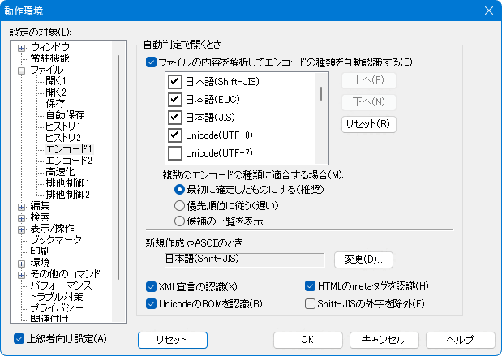
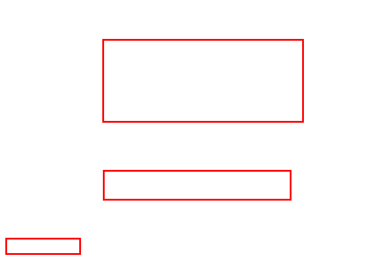

[HME0031A]
●文字コードの設定がヘン？

- 秀丸エディタで、テキストファイルの読み込みと終了を繰り返していると、いつのまにか２バイト系日本語文字が記号やアルファベットに化けてしまって読めなくなってしまいました。また、秀丸エディタでShift_JIS以外の文字コードを扱う場合に、注意すべき点はありますか？

-
一般に文字コードの判別に関しては、100%の対応はどんなソフトウェアでも難しいので、最終的には目で見て確認するのがベストです。
標準の Shift_JIS コードだけを使っている場合には問題は起きません。しかし他の文字コードも使っている場合には、上書き保存した時に予期せぬ文字コードに変換されてしまうことがあります。一見しても見分けられないだけに厄介です(^^;)。
- [補足]
-
秀丸エディタで自動認識を有効にするには。「その他」→「動作環境」→「ファイル」→「エンコード１」にある、「ファイルの内容を解析してエンコードの種類を自動認識する」をONにして下さい。
(「エンコード1」が表示されていない場合は、「動作環境」画面左下にある「上級者向け設定」をONにしてください)「上へ」、「下へ」のボタンで、エンコードの優先順を変更可能です。また、新規ファイル作成時のエンコードを指定する事も可能です。
 